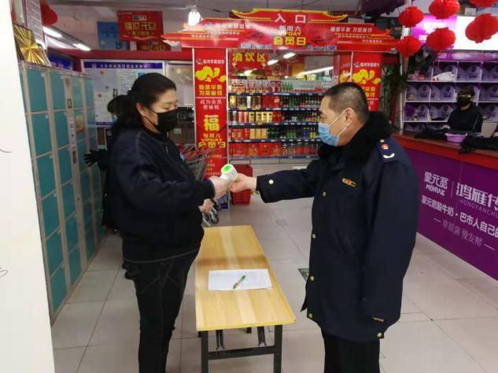
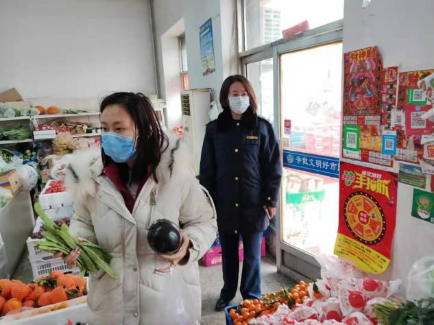

二十多日煎熬，我的隔离日记
原文链接 备份链接 “ - 疫 情 之 下 - 疫情过后，你最想见的人是谁，最想做的事是什么？我想，等疫情过后，我最想见的人就是我的妻子和女儿，我想牵着你们的手，去我工作和生活的城市看一看，去吃一碗热干面，去江汉路上走一走，去看樱花盛开， …

“

- 疫 情 之 下 -
疫情没有结束，我们的工作仍在继续。在这场“战疫”中，我们的付出终有所获，经营户对我们的理解，人民群众对我们的信任，鼓舞着我们在疫情蔓延的环境下不断向前。
”
我的朋友是一名市场监督管理所的所长。在春节前，市场监管所就一直没有停止过忙碌：创建全国文明城市、节前市场检查，一直忙碌到腊月二十九。本来计划春节期间好好休息几天，但这场突如其来的疫情打乱了她的计划。以下，是她的春节抗“疫”日记。
1月25日
早晨睡了一个小懒觉，工作群里的拜年短信一波接一波，我见缝插针地发了一条祝福短信，却看到局长在群里发通知说十一点回局里开会。
我一看时间，上午十点，有点懵，今天不是大年初一吗？什么情况这么匆忙?
联想到最近发生的大事，我猜想是因为新冠肺炎疫情。
匆匆收拾了一下就赶到了局里，局长、分管局长和十一个市场监管所的所长都陆续到了。
我们确实是为新冠肺炎疫情而来。按照防控工作领导小组要求，从2020年1月25日12时起，对所有烧烤店、酒吧、餐饮宴会厅等场所实行临时关停。局长要求市场监督管理所的工作人员取消假期，站在防疫前线，维持市场秩序。
在大年初一接到立即投入工作的指令，真让人无奈。
我给几个组长打了电话，问了一下辖区餐饮店的情况，让他们先各自电话通知相关门店关停，明天正式上班再下辖区督促。
下午四点，各所已经开始通知关停烧烤、酒吧、餐饮及流动宴会车，工作群里的照片发了一波又一波，我开始感觉到情况有点严重了。
工作群里，办公室的小同事说：“若需要，召必回，时刻准备着！”所里的同事回她：“召必回，回必战，战必胜！你老实在家待着，就是对社会、对我们最好的回报！”我笑了，但还是感觉到了疫情的紧张。
晚上虽然和家人一起吃饭，但我的心思都在防疫上。吃罢晚饭，我又给辖区内有大型饭店的组长打了电话，因为大型饭店聚集的人多，告诉他务必要让大型饭店先关停。
1月26日
我们这里过春节，除了超市和餐饮店，其他的店铺一般要到正月初五之后才会开门营业。因此，这次疫情餐饮业损失较大。
早上到了所里，等所有人员到位，我简单地传达了昨天的会议内容，告诉大家从今天开始取消休假，全员返岗，立即实行疫情防控应急制度，投入到疫情防控监管工作当中。
我和同事去了辖区的那家大型饭店，后厨的几个厨师正在收拾东西，老板苦着脸对我们说：“为了这个春节，我们囤了好多海鲜和肉类，买了好多新鲜蔬菜，现在让我们关门，我们囤的肉要往哪里放？蔬菜怎么办？这得损失多少啊！”
同事说：“现在武汉都封城了，说明疫情已经很严重了。要是因为聚餐咱们这儿也有了疫情，你的损失更大！更何况那责任你也担不起呀！”
我接着补充道：“对啊，现在是非常时期，这也是响应政府号召。海鲜和肉类你先联系个冷库存起来，新鲜蔬菜就发给职工当做福利吧。关门给员工放假，你们也回去和家人团团圆圆过个春节！”
做好了大型餐饮店的工作，我松了口气。可是一些小型的餐饮店还在收拾着准备开门营业，这也是个重头戏，我们一家一家通知让关停。大部分的经营者理解并配合，但也有一些经营者还在说风凉话。
一家炖菜馆的老板冲我们发脾气：“我们平常生意一般，正准备在春节期间好好挣几天钱，你们却让关门！”
同事只好陪笑脸：“不是我们不让你们开门营业，这不是遇上疫情了嘛！这次的疫情最怕的就是人员聚集，先暂时关门，等疫情过后再开吧！”
为了隔断相互感染的可能，我们只能苦口婆心、好言规劝。等通知完辖区内的所有餐饮店，我们早已说得口干舌躁。
我也理解经营者，春节正是亲朋好友相聚的黄金时间，人们之间互相宴请，走亲访友懒得做饭都是去饭店，这几天餐饮业一定是火爆的。这让餐饮店关了门，得少赚多少钱啊！

1月27日
今天，新冠肺炎疫情指挥部下发通知，与此次疫情防控工作直接相关的公职人员提前结束假期返岗。
出去上班的时候，雾蒙蒙的天气让人倍感压抑。车载收音机上正在播报：国家卫健委收到31个省（自治区、直辖市）累计报告确诊病例2744例，重症病例461例，累计死亡病例80例，疑似病例5794例……满大街的雾淞，但我无心欣赏。白茫茫一片，让人觉得仿佛置身于一个巨大的病房中。
虽然疫情已经如此严重，但还是有人没放在心上，这一部分人也具有被传染的极大可能。
为了防疫，超市、药店均设立了体温测试点，便民市场加大宣传力度，在大屏幕上播放居民防护知识，告知市民进入市场须戴口罩。
我和同事去了几个大中型超市和药店，只见进店的消费者都在体温测试点处有序等待进店，可是还有一些人不戴口罩。
我看到人群中的一个大哥没戴口罩在排队，忍不住说：“大哥，这几天出来还是把口罩戴上吧！”
那位大哥瞥了我一眼，说：“我又没有病毒！”
“有没有病毒谁说了也不算啊，你也不知道别人有没有病毒不是？戴上口罩是为你负责，也是为大家负责！”我继续督劝。
那位大哥瞪了我一眼掉头就走。测体温的超市工作人员偷偷给我竖大拇指，说：“遇到不戴口罩的人，我们也不好说，一说人家就生气了。”
我说：“别管他生气不生气，咱们让他戴口罩是为他好，现在疫情这么严重，不戴口罩出来就是不负责。”
我在心里琢磨，怎样才能把戴口罩这个事情宣传到每一个店呢？仅靠店员提醒也不是个办法。
对！应该在每个营业的店门口贴一张纸：“不戴口罩，谢绝入内。”就这么办！
我在所内的工作群里让各组上报了一下需求量，通知在所内值守的工作人员先打印了200多份，让同事们发放给开业的店铺。
下午接到通知，客运班车、旅游包车、公交车全部停运了。所有的媒体都在强调：尽量不出入公共场所，避免到人群密集的场所，不参与聚餐、聚会，在公共场所戴好口罩，做好个人防护，勤洗手，增强免疫力。
晚上8点，局里的同事说，某小区楼下有户餐饮店仍在营业，并有3桌客人在用餐。我赶紧联系管辖的组长，10分钟后他们火速赶到了该餐饮店，向经营者讲了目前的形势，并对用餐的消费者进行了规劝。50分钟后，这家餐饮店关门，所内的工作人员给我反馈回了消息，我这才放心。
1月28日
今天累计报告确诊病例4515例，重症病例976例，累计死亡病例106例，疑似病例6973例。所有的病例都直线上升，我市也确诊了一例新冠肺炎，气氛明显更加紧张了。
我和同事去药店检查，以口罩、酒精、消毒液等防疫用品为检查重点。
我们正在查看购销记录，有个戴口罩的女人进来买感冒药和退烧药。
退烧药？我的耳朵敏感地捕捉到这三个字。
药店工作人员给买药人测了体温，询问她的名字、住址、电话等具体信息，买药的人不太配合，生气地说：“我只是家里的孩子感冒发烧了买个药而已，问这些干嘛！”
我走上前去说：“还是配合一下吧！现在疫情越来越严重，他们也是根据政府规定登记的。”
买药的大姐不耐烦地大声说：“不就是个感冒发烧，能有多大事儿了？”
我说：“放心吧，他们登记你的信息是按规定上报有关部门，不会把你的个人信息泄露给不相干的人的。孩子发烧，体温多少度？”
对方怒气冲冲地说：“你们就是这么小题大作……”她转头看了一眼我们的制服，态度软了下来，不情愿地说：“孩子发烧37.2度。”
我又问：“孩子或者家里人最近有没有去外地？尤其是湖北。”
“没有，一直在家。”
“那就应该没事儿，回去给吃点药，多喝开水就好了。”
买药人登记了信息拿着药走了，我让药店的工作人员把登记的信息上报给药监所和办事处的联络员，才和同事离开。
路上同事问我：“如果这个买药的家里的人接触过湖北那边的人，咱们是不是也得隔离了？”
我心里一紧，说：“是啊，咱们也得隔离，不过当时我真没想那么多。你们以后下去，一定要保护好自己！”
但是怎么保护呢？我们所有的防护措施只是一个口罩，还经常供应不足，一个一次性的口罩要戴三四天。家里的口罩已经告急，只剩两只了。药店的口罩已经脱销，谁都没想到口罩成了今年最畅销的年货。

1月29日
今天的形势更加不妙，国道、省道、县道以及很多的路口都封了，我们也更加忙了。
超市是否都设立了体温监测点，药店是否对进店顾客进行体温监测、消毒，实名制登记是否得到执行……这些都需要核实填表。而上级的要求也越来越细，越来越严格。
所里的人分成两组，每天晚上，我会安排一组工作人员夜查辖区的餐饮户，核查关停的餐饮店是否私自开业，看还在开业的经营户防控措施是否落实到位。
今天轮到我带队夜查，街道很冷清，只有路灯和几个开门的超市的灯亮着。小区里却是万家灯火，门口的桌子上放着登记本和体温枪，小区门口的值守人员还在恪尽职守地值班。
我们走进一家超市，超市门口的体温监测点的员工尽职地给我们测了体温。超市的老板正在整理货品，我问起这两天的疫情防控情况，老板笑着说：“自从你们给贴上‘不戴口罩，谢绝入内’的标示语后，我们也不用再费口舌提醒顾客了，真是感谢你们！”
我也笑道：“能得到你们的理解，我们的工作就没白做。咱们这里也有了确诊病例，你们还是要做好自身的防护。”
跟老板道了别，我们继续夜查。等夜查完，回家的时候快10点了。宽阔的路上空无一人，不用担心堵车，也不用礼让行人，只有路灯亮着，像一座空城。
这几天每天巡查完的步数都在15000步以上，最多的时候有20000多步。我在微信朋友圈中的步行排行榜上总是“名列前茅”，就当是身体锻炼了。

1月30日
疫情防控形式愈加紧张，出租车、网约车都已经停运，政府倡导私家车减少出行。
早上去上班的时候，小区物业说，人可以回家，但车从今天开始不能进小区，只能停在小区外面了。
疫情当前，也有温暖。
今天，某通讯公司的总经理联系我，说要向奋战在阻击疫情一线的市场监管人员捐赠一箱口罩。他把口罩送到所里，诚恳地说：“你们辛苦了！现在疫情这么严重，你们一天都没有休息。我们能在家里不出门，你们却在一线和个体户、消费者近距离接触，我们捐赠这些口罩，尽一点微薄之力吧！”
另一家公司给我们捐赠了300个一次性防疫工作帽，他也对辛勤付出在防控一线的市场监管工作人员表示了感谢。
口罩是我们急需的，至于一次性的防疫工作帽，我觉得每天在超市的工作人员比我们更需要。我跟大家商量了一下，决定将300个一次性防疫工作帽捐赠给更急需疫情防控物资的三个大超市。
结 语
疫情没有结束，我们的工作仍在继续。在这场“战疫”中，我们的付出终有所获，经营户对我们的理解，人民群众对我们的信任，鼓舞着我们在疫情蔓延的环境下不断向前。
愿疫情尽快过去，我们可以和家人、朋友尽情地去吃一顿烧烤，逛一下商场，踏一次青。
-END-
作者 | 赏月听泉，左手工作，右手写作。
// 一个一直在奔跑的资深伪文艺青年。//
“我故”故事练习生培养计划，详情请戳：

About us
主编：鹿｜本期编辑：扶风
Contact us
投稿/商务合作/咨询
微信后台留言 or 邮箱：wmsygsdr@163.com
**我们是有故事的人｜华中科技大学出版社官方故事平台**
原文链接 备份链接 “ - 疫 情 之 下 - 疫情过后，你最想见的人是谁，最想做的事是什么？我想，等疫情过后，我最想见的人就是我的妻子和女儿，我想牵着你们的手，去我工作和生活的城市看一看，去吃一碗热干面，去江汉路上走一走，去看樱花盛开， …
原文链接 备份链接 - 疫 情 之 下 - 只有在这样的特殊时刻，我们才体会到平平常常的日子是多么美好，多么幸福…… ” 疫情爆发得如此迅猛，让所有人始料未及。 己亥年腊月二十九，公历2020年1月23日，我去单位上年前最后一天班，那时我 …
原文链接 备份链接 【编者按】 28日，我们收到了一位名为“尘香”的读者来信，她是武汉人，退休在家，和丈夫、女儿、女婿一起留守在武汉市江汉区：截至2020年1月29日24时，武汉市累计报告新型冠状病毒感染的肺炎病例已达2261例，死 …
原文链接 备份链接 澎湃新闻记者 林平 2月26日上午，国务院应对新型冠状病毒感染肺炎疫情联防联控机制举行新闻发布会，介绍《关于政法机关依法保障疫情防控期间复工复产的意见》有关情况。 近期监狱病例激增所致，疫情如何在监狱传播？目前治疗情况 …
原文链接 备份链接 1月23日武汉封城前，有近70万黄冈人从武汉返乡，并带回新冠疫情。这些返乡人员分布在黄冈市下辖的10个县市区。 其中一个人口百万的县，确诊病例数在全市排名靠前。曾在武汉出现的床位紧缺、物资告急、病毒检测困难，在这座 …